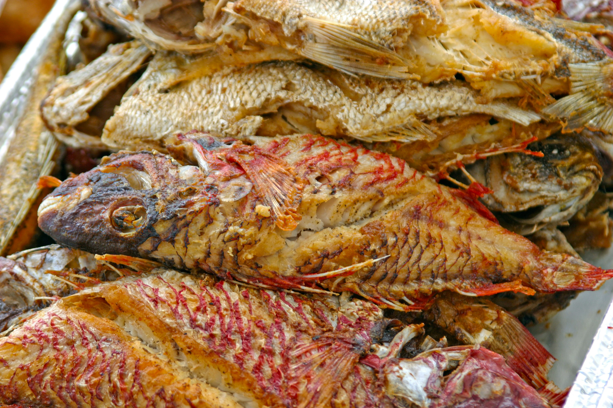
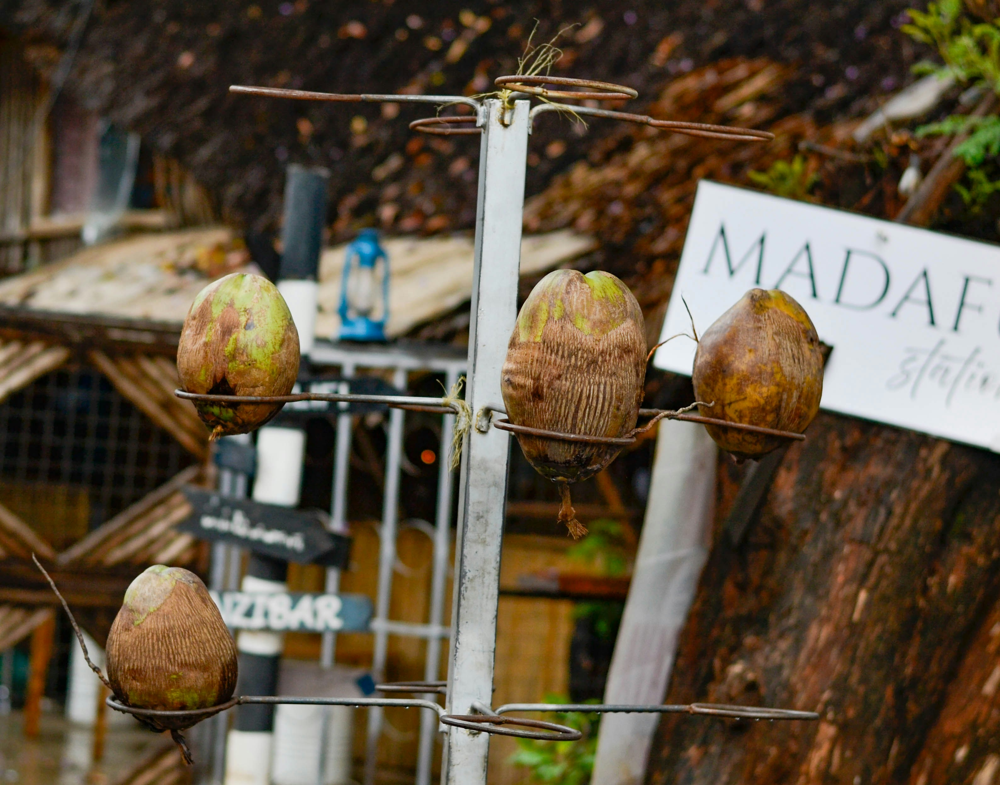
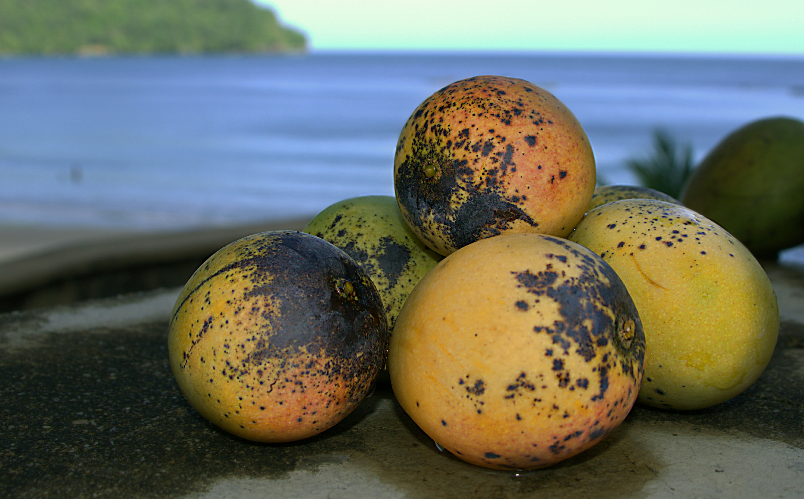
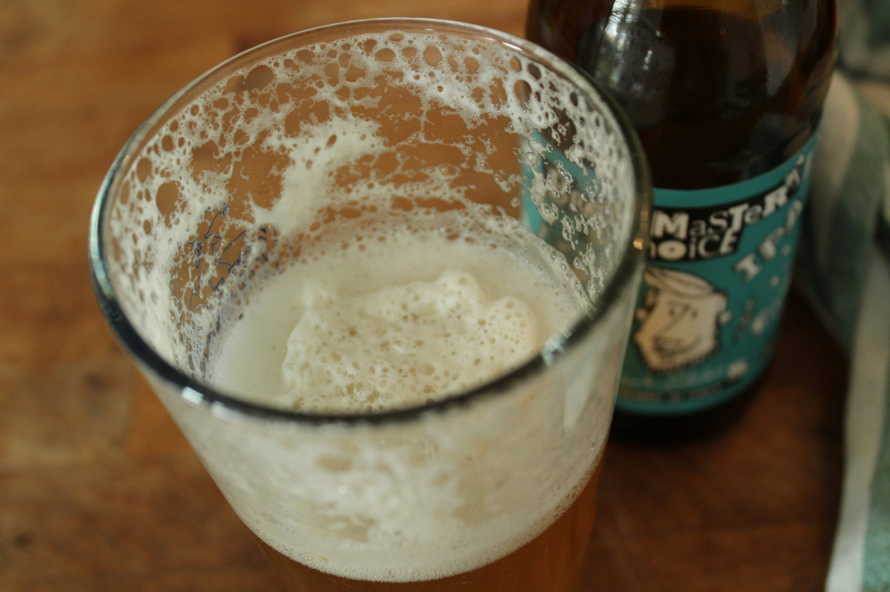

Local Dishes

Grilled Reef Fish
The island's most iconic dish — locally caught reef fish seasoned with fresh lime, coconut milk, and island herbs, then grilled over an open flame. Served at most local restaurants and beach food stalls every evening.
Find It
Taro & Coconut Pot
A slow-cooked traditional stew made with taro root, coconut cream, and leafy greens, often served alongside fresh-caught fish. A staple in Taniti homes for centuries and still a favourite at local restaurants today.
Find It
Tropical Fruit Platter
Taniti's warm climate produces some of the best tropical fruit in the Pacific — papaya, mango, passionfruit, and starfruit, served fresh at breakfast tables across the island and at the Taniti City morning market.
Find It
Umu-Roasted Pork
Prepared in a traditional underground oven — the umu — this slow-roasted pork is tender, smoky, and deeply flavourful. Usually reserved for communal celebrations, but several restaurants on the island serve it on weekends.
Find It
Harbour Night Market
Every Friday and Saturday evening, the harbour comes alive with food stalls selling freshly grilled skewers, coconut bread, fish tacos, and chilled fruit drinks. The best casual dining experience on the island — and completely free to browse.
Find It
Yellow Leaf Coconut Ale
Brewed locally at the Yellow Leaf Brewery using island coconut and Pacific hops, this refreshing ale has become Taniti's unofficial drink. Available at the brewery taproom, The Palms Inn bar, and several restaurants across the island.
Find It